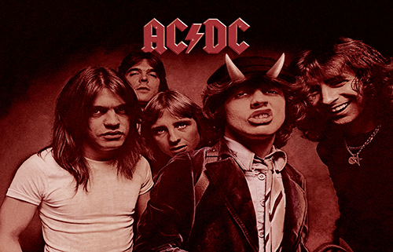

AC/DC es un grupo de hard rock australiano formado en 1973 en Sídney, Australia, por los hermanos escoceses Malcolm y Angus Young.Sus álbumes se han vendido en un total estimado de 200 millones de copias, embarcándose en giras multitudinarias por todo el mundo, y sus éxitos han musicalizado varias producciones cinematográficas sobresalientes.Son famosas sus actuaciones en vivo, resultando vibrantes y exultantes espectáculos de primer orden. Mucho de ello se debe al extravagante estilo de su guitarrista principal y símbolo visual, Angus Young, quien asume el rol de agitador musical durante los conciertos, gracias a sus dinámicos y adrenalínicos despliegues escénicos uniformado de colegial callejero. Al comienzo, los circuitos de pubs australianos fueron testigo de los primeros meses de vida del proyecto, tiempos por los cuales sufrieron diversos cambios en su alineación. En 1974, la llegada del cantante Bon Scott, se convertiría en pieza clave del éxito del grupo. Su presencia en escena, junto a los hermanos Young, lo convirtió en uno de los personajes más carismáticos de la historia del rock. La formación se estabilizaría con Mark Evans (bajo) y Phil Rudd (batería).
En 1976 incursionaron por primera vez fuera de las fronteras australianas con High Voltage y Dirty Deeds Done Dirt Cheap, discos minimalistas de básico rock, que ofrecían un contrapunto sonoro a las ampulosidades y la fastuosidad de las bandas que triunfaron en el mercado de la época. Ese mismo año se trasladaron al Reino Unido, de donde procedían los Young. Desembarcaron en pleno auge del punk rock, lo que contribuyó a que en poco tiempo obtuvieron una enorme aceptación del público, ocupando inmediatamente los primeros puestos en ventas con discos como Let There Be Rock (1977) y Powerage (1978). Durante su estadía en tierras inglesas, decidieron introducir a Cliff Williams como nuevo bajista.